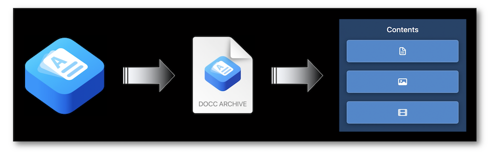

WWDC 2021: DocC documentation in Xcode
Find hereafter a detailed summary of four videos that belong to a taxonomy of some WWDC footages.
The original videos are available on the official Apple website (session 10166, session 10167, session 10235 and session 10236).
"Discover how you can use DocC to build and share documentation for Swift packages and frameworks. We'll show you how to begin generating documentation from your own code — or from third-party code you depend upon — and write and format it using Markdown. And we'll also take you through the export process, helping you generate DocC archives to share with the public."
"Great documentation can help people effectively and easily adopt your Swift framework. Discover how you can create rich, conceptual articles to accompany your API. You'll learn best practices for writing articles, including how to structure your documentation, and find out how to create automatically managed links that connect your docs together."
"Discover how you can author immersive tutorials from scratch with DocC. We'll demonstrate how you can bring together rich instructions, example code, and images through the DocC syntax to showcase your Swift framework in action. And we'll go over how to create progressive training that can provide interactive learning opportunities and help people better understand use cases for your framework."
"Find out how you can easily host your Swift package and framework DocC documentation online. We'll take you through configuring your web server to host your generated DocC archives, and help you learn to use the xcodebuild tool to automate documentation generation and keep your web content synchronized and up to date."
The various contents of this speech are indicated hereunder:
Most of the illustrations are parts of the Apple presentations and may be available at the Resources section inside the Overview sheet of each video.
Hereafter, the underlined elements lead directly to the playback of the WWDC video at the appropriate moment.
Introduction #
DocC is an integrated documentation environment that enables Xcode to realize many useful new actions regarding the documentation for Swift packages and frameworks.
Documentation Catalog #
This Xcode 13 new feature enables the creation of three different new elements, the documentation page types defined below, that ease and highlight the documentation information to be revealed as well on the documentation window as on the web.
Creating this element is the to embedding any documentation.
Documentation build #
Xcode 13 introduced a new Xcode menu item and a new build setting that permit a direct building of the documentation when compiling.
Besides the new xcodebuild command, many other useful information regarding automation for documentation are also available in the sharing section.
Reference type #
This page type is a crucial element in documentation because it aims at providing precise information about every piece of code that must be pointed out.
Easy to consult in the Xcode Documentation window, it allows to add descriptions, code snippets and relationships between different symbols that the following tips and tricks highlight:
-
Simple line for the summary part ⟹ 🎬
-
Discussion part with a block syntax ⟹ 🎬
-
Quick peek to the documentation from the code and next straight to the documentation window from this location ⟹ 🎬
-
Method with multiple parameters ⟹ 🎬
-
Link to another page of information ⟹ 🎬
... and using the Add Documentation feature is definitely the best way to ease and speed up this process.
Once built, the documentation can also be exported.
Articles type #
This page type aims at displaying the overall view of the framework thanks to the top-level article while providing potential step-by-step explanations of dedicated tasks.
Setup the Document Catalog that will contain all the page types is the first thing to handle before writing any articles.
When dealing with images in articles, it's highly recommended to provide a 2x resolution Dark Mode-compatible asset.
Finally, the images should be moved from the Finder towards the Resources folder of the Documentation Catalog to be properly displayed with the appropriate code writing.
There are simple rules to follow in order to produce a global presentation easy to be understood by everyone at first glance.
This organization is setup thanks to a specific markdown writing.
Finally, the use of the documentation extensions enables to arrange the contents in distinct files in order to ease the clarity in code.
Tutorials type #
The goal of this page type is to ease the understanding of the framework contents thanks to step by step explanations.
The characteristic of the tutorials type is its text writing that relies on a specific syntax using directives with markdown recognized as dedicated markers by DocC.
This element is crucial both for compiling the tutorials but also for introducing them through dedicated directives regarding the introduction, the chapters and the links firstly.
Arrangement #
In order to provide the best user experience, it's crucial to expose the APIs as pedagogically as possible:
-
Sorting in importance descending order.
-
Grouping by functional domain.
-
Designing in such a way that everything is clearly and undoubtedly exposed to everyone.
Example #
This part contains the different steps to follow in order to implement completely a tutorial by applying the notions previously introduced and assuming that the table of contents is already created in the dedicated folder:
- Create the basis of the tutorial ⟹ 🎬
- Import the images in the
Resourcesfolder ⟹ 🎬
- Link an image to its source and author its accessible label ⟹ 🎬
-
Complete the first items of the section part ⟹ 🎬
-
Fill in the steps including Dark Mode-compatible images ⟹ 🎬
-
Build the documentation and browse through the navigator to preview the created elements ⟹ 🎬
- Understand every element composing a
Stepdirective with coding instructions ⟹ 🎬
- Import many tutorials already being prepared and link them in the table of contents ⟹ 🎬
The changes in code are automatically pointed out by Xcode in order to have a straight visual on the modifications provided by the displayed portion of code.
An image may be also shown up as a preview of the highlighted lines of code.
Sharing #
The documentation archive is a container including necessary information that renders the documentation directly through Xcode or online.

Hosting #
The .htaccess file must be completed with some routing rules to allow a perfect access to the documentation archive copied into the directory.
Automating #
Creating scripts with command lines using xcodebuid is the way to follow to keep a hosted documentation automatically updated when changes occur.
The new docbuild action concomitantly used with the xcodebuid command permits to build documentation through the command lines.
Author scripts with this new command line will enhance the user experience regarding the documentation while significantly easing its update.